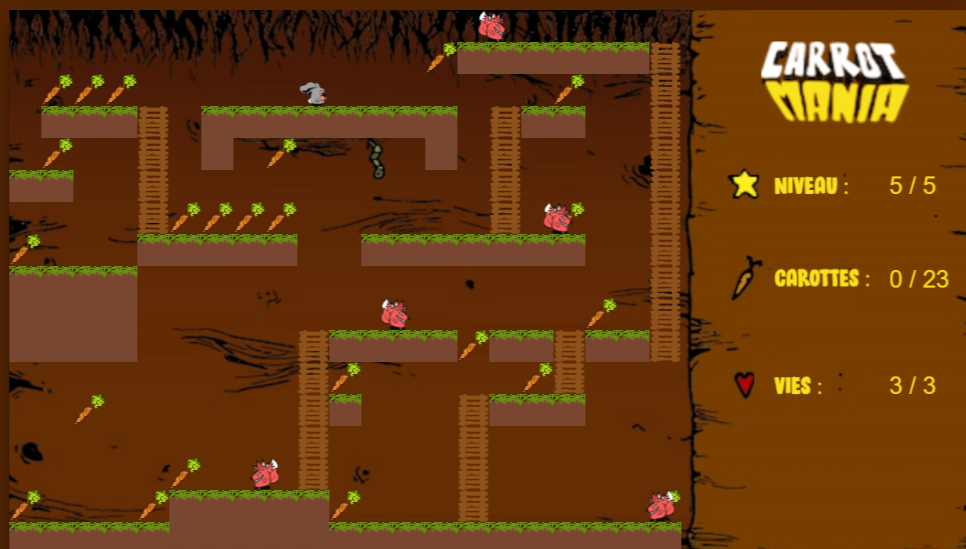
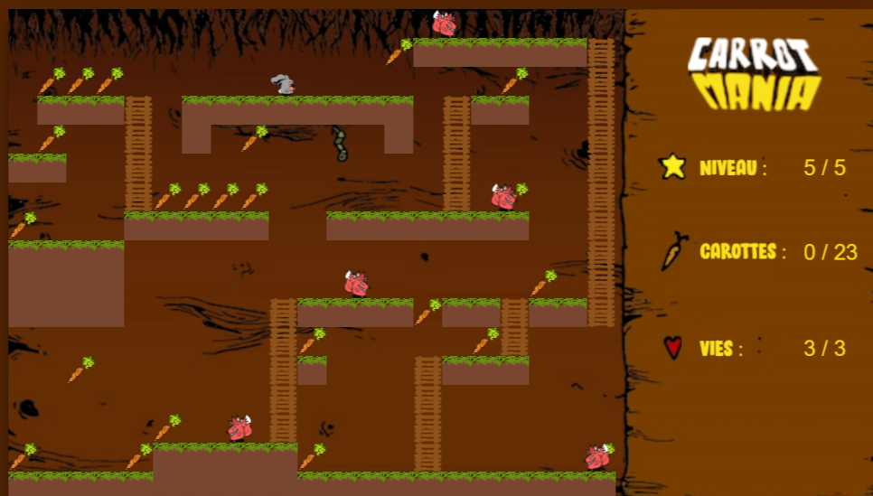

Carrot Mania est un projet de jeu en 2D réalisé pour l'afterWork à Passerelle Numerique.
Le projet a été réalisé en groupe par Aboudou El-Haire , Achache Myriam, Lobry Janis et moi-même M'madi Faouzi.
Carrot Mania est un jeu de plateforme 2D, dans lequel le joueur incarne un lapin, qui doit manger toutes les carottes se trouvant dans un niveau. Le lapin peut se déplacer de gauche à droite, monter et descendre des échelles et creuser des trous. Dans les niveaux, il y a des renards qui peuvent tuer le lapin, qui dispose de 3 vies par niveau. S’il perd une vie, il recommence du point de départ, sans que les carottes mangées réapparaissent. S’il perd toutes ses vies, il recommence le niveau de 0.
Pour la réalisation du projet, nous nous sommes dispatchés les taches. Janis était chargée de faire les maquettes du jeu avec les sprites (personnages) du jeu, tout sur feuille à papier puis moi je récupère les dessins pour les scanner et les infiltrer sur l'ordinateur pour pouvoir faire du coloriage avec Adobe Illustrator. El-haire avait déjà réalisé un jeu dans ces années de faculté ce qui lui a rendu la tâche plus facile pour la réalisation du jeu. Nous sommes partis de zéro, et nous avons pu faire entièrement le jeu avec du Javascript. Je me suis aussi chargé de faire les maquettes de chaque niveau sur papier pour ensuite les reproduire sur l'ordinateur en Javascript.
Le jeu a été fait dans une interface qui s'appelle le canvas qui définit l'axe des abscisses et ordonnées, puis les platformes et les échelles sont intégrées dans un "carré" du canvas. La terre ou le lapin et le renard ont été aussi placés à l'intérieur des carrés du canvas.
Janis et Myriam se sont chargées aussi de la landing page pour pouvoir présenter le projet, et expliquer les fonctionnalités du jeu.
Vous pouvez constater sur les photos qu'on aperçoit un niveau un peu complexe, il s'agit du dernier niveau qui est le 5ème. Pas beaucoup de personnes ont réussi à atteindre ce niveau-là.
Le lien du jeu est ci-dessous
Bonne Chance.
Les collaborateurs du projet sont :